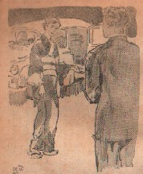

勝負の条件
僕は折り入って竹さんに頼んで、半チャンだけ特に彼女と勝負をさせてくれと頼んだのである。他人を交えずに彼女と運を争いたいといったのである。竹さんはこころよく彼女に席を譲ってやったうえに、どこに注文したのか、僕たちのテーブルだけは「乗り賭け」の見物を寄せつかないようにしてくれた。
「ただし、正直にいうけれど僕はここに一万円しか持ち合わせていない。だから半チャン終わらないうちに負けたら、いさぎよくシャッポをぬぎます。むろん負けるつもりはないが、挑戦しておいてそのうえ借金するような恥はかきたくないですから、最初にこれだけはお断りしたわけです」と僕は云った。
「勝負は時の運ですわ。といって、あたしも滅多にまけないつもりですから」
と彼女は応じた。場所が決まっておあつらえ向きに彼女と僕は対面した。対立意識を燃え上がらすにはもってこいの対面同士である。ガラガラとここの麻雀卓には布が貼ってないので、すざましい夕立のような音を立てた。僕が最初の親だった。普通、大抵の人が最初の親を嫌うが、僕は反対にこれが好きなのだ。逃げ込めるからである。
「西！」と僕はいきなり彼女の風を叩きつけるように捨てた。意識的に敵の風を第一牌で捨てると、そいつに勝てそうな気がするものだ。次の人が同じく西を捨てたので、僕はこれで彼女から風だけの一飜を奪ったわけであった。が、彼女も負けていない。
「お返しに、早いけど、東！」と僕の風を切ってきた。あいにく僕にはポンできない。すると僕の論法で行けば、彼女は僕から両飜を奪ったｌことになる。いずれにしろ僕は、僕の配牌に飜牌が少ないことから、第１回戦はなるべく敵に飜牌がつかない戦法を取った。紅中でも緑發でも１枚しかなければ、それを真っ先に切り捨てておくという戦法である。もし逆にこれを敵がポンすればしたで、案外敵の上がり点数の大小を読むことが出来る。
こうして同じ彼女を意識するにしても、ハッキリした敵対意識で、徹頭徹尾僕は彼女に立ち向かった。いろいろな戦法をいくら書いても始まらないが、いわゆるテクニック以外に僕が注目したのは、彼女の牌の並べ方のクセであった。これは一風すめば大体わかる。彼女は左側に多くマンツを並べ、右側にピンツを並べるようであった。じっと注意していると、最後の捨て牌によってテンパイした彼女の待ち牌がピンツかマンツかソーツか、大体わかるようになった。
僕は、もし彼女の上がり点が大きそうな場合、そして僕が上がる見込みのなさそうな場合、徹底的にオリるか、安い待ちの人にワザと振り込むようにした。また僕自身は絶対にガメったのである。半チャン麻雀では、一発大物を当てるガメリ戦法のほうが結局トクだし、第一、ガメリ式は一か八かのスリルに富んでいる。
半チャンの表は大差なく、スースーッと終わった。裏に入った最初の親で、僕は三色同順のタンヤオピンフ、しかもドラ牌が頭、サイコロまでついて早いテンパイのリーチだった。僕はワクワクした。上がれば完全に五割り増し満貫である。彼女にでも振り込ませれば、よほどの事でもない限り、僕の勝利は決定的になる。僕の心臓は早鐘を打った。
注：「サイコロまでついて」→当時の麻雀は、その局に振られたサイコロの目によって、アガリ手に一飜加算されたり、二飜加算されたりした。今日の場ゾロ＝両ゾロは、これが定着したもの。
が、なんということだろう！。彼女は隣の男に二百円最低をいち早く振り込んで逃げたのである。僕の親マン九千円は、レバマンの夢と消え去った。しかもこれが僕のケチのつき始めとなった。僕はクサリにクサった。これではいけないと知りつつ勝負にアセリが出て、ついムリを通し、一挙に深い穴を彫ってしまったのである。大した点数ではないにしても、隣の男に１４４を振り込み、彼女にレンチャンを三回も許し、結果は僕がチンマイの一万円以上の負け、しばらくは口もきけぬ悔しさだった。
注：「レバマン」→「たられば満貫」の略。
時間は一時間とたっていない。さっきに変わる転落の憂き目にあい、僕は力無く立ち上がって賭博者仲間の圏外にでた。あきらめきれない。が、もはやオケラとなっては再度の挑戦の資格はないのだ。僕は最高点の彼女に七千円はとられていた。僕は竹さんに挨拶して、まったくの深夜の町にでた。これほどひどい敗北感に打ちのめされたことはなかった。トボトボと人気のない舗道を歩いて帰る。一番電車が走る頃まで、どこまでも歩いているつもりだったのだ。
ところがである。かなり歩いた頃、一台の自動車がかなりのスピードで走ってきてキーッと僕に近づき急停車すると、中から女の声が。
「乗らない？」と僕を誘った。
「あ、あんたは・・・・」さっきの女だった。
「さっきはさっきよ。さ、お乗りなさい」

しばらくためらったのち、僕はついフラフラと彼女の言葉にしたがっていた。ふたたび自動車は、僕の意志とは関係無しに疾走しはじめた。いや、僕には意志などなかった。賭博のあとの一種の虚脱した心の中に吹き込むような彼女の言葉を、ただ遠く聞いていた。
「あたしが負けたのよ。ちょうど一万点で負けたわ。あなたのようにムキになってかかってきた人、あそこでは初めてよ。あそこでは毎晩、何百万というお金が動いているわ。千点千円なんてカンバンだけのことなのよ。でもたった一万点の勝負で、今度みたいにあたしを夢中にさせたものはなかったわ。久しぶりで、あたし退屈を忘れたの。そのお礼に来たのよ。いいえ、それよりあなたの気迫に負けちゃったの。勝負はスリルだわ。大きさと小ささと比べたら、完全にあたしの負けよ。ね、あなたは勝ったのよ。あたし、認めるわ。さ、一万点で勝ったこのあたしを、どんなにでもしてちょうだい」
女の言葉がささやきにかわり、それからもしばらく続いた。僕はそれに対して、ただ一言、「君は変わっているなぁ」と云っただけであった。
・・・・まったく彼女は変わっていた。何がどう変わっているかは、この僕のうち明け話しと関係ないことだろう。なにもかも変わった女だった。いや、スバラシイ女だった。それはあるホテルに落ち着いてから確かめたことだとだけ、お伝えしておこう....
完
|